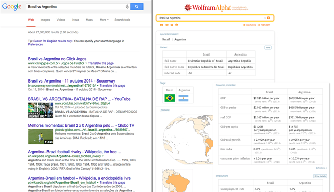

| Gerações | Portais (Instituições de grande porte) | Pessoas, ONGs e pequenas empresas | Agentes(computadores,tablets e smartphones) | Virtude |
|---|---|---|---|---|
| Web 1.0 | P | C | democratização do acesso a informação | |
| Web 2.0 | CP | CP | democratização da produção de conteúdo | |
| Web 3.0 | CP | CP | CP | democratização da capacitdade de ação e conhecimento |
| www.aquare.Ia | ||||
| C-Consome | ||||
| P-Produz | ||||
